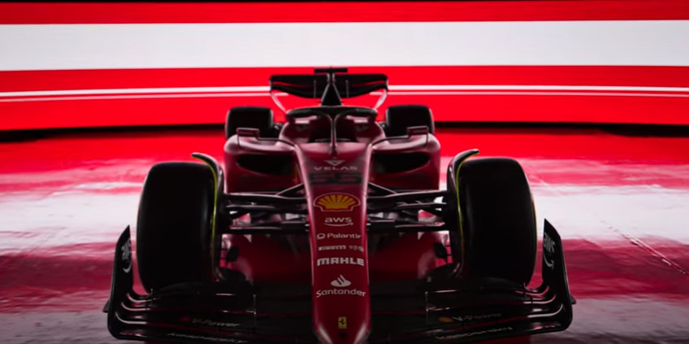

La Scuderia Ferrari è una squadra corse italiana di Formula 1 con sede a Maranello, sezione sportiva della casa automobilistica Ferrari. Fondata da Enzo Ferrari nel 1929, nel corso dei decenni si è imposta come una delle più note e titolate squadre nel panorama dell'automobilismo sportivo mondiale. Ha principalmente legato il suo nome al campionato mondiale di Formula 1, in cui è presente fin dalla sua istituzione e in cui ha conquistato 15 volte il titolo piloti e 16 quello costruttori (record assoluto di entrambe le categorie). Ha inoltre riportato numerosi successi nelle competizioni per vetture Sport Prototipo e Gran Turismo come il campionato del mondo sportprototipi, dove ha vinto 12 titoli costruttori, in gare di durata come la 24 Ore di Le Mans, la 24 Ore di Daytona e la 12 Ore di Sebring, e in serie minori come la Formula Tasman. Tra i suoi trionfi più prestigiosi annovera le vittorie nelle tre maggiori competizioni mondiali su tracciato stradale, ovvero la Targa Florio, la Mille Miglia e la Carrera Panamericana. Dal 1929 al 1937 è stata allestita dalla S.A. Scuderia Ferrari, che correva con automobili fornite in esclusiva da Alfa Romeo, andando così a rappresentare ufficiosamente il reparto corse della casa milanese. Nel 1939, dopo due anni di sospensione dell'attività agonistica, la squadra è rinata, questa volta indipendente, sotto il nome di Auto Avio Costruzioni; dal 1947 ha ripreso la denominazione di Scuderia Ferrari. Nel 1969, insieme a tutte la proprietà del marchio del Cavallino, anche la squadra corse viene acquistata da FIAT. La divisione della Ferrari a cui è delegato l'allestimento della Scuderia è la Gestione Sportiva (GES); il supporto a team e clienti che competono con vetture Ferrari private è delegato invece al dipartimento Ferrari Corse Clienti. In conseguenza a contratti di sponsorizzazione, al nome della squadra può essere affiancato quello di un title partner, ruolo che per la Scuderia Ferrari è stato storicamente rappresentato, dal 1997[4] al 2021, da Philip Morris International attraverso marchi quali Marlboro, peraltro presente a livello pubblicitario sulle vetture del Cavallino già dagli anni 70 del XX secolo, e Mission Winnow. Nel 2013 è la scuderia motoristica sportiva più ricca tra quelle della Formula 1 e della NASCAR, piazzandosi inoltre al 21º posto nella classifica delle 50 società sportive più ricche del globo, con un valore complessivo stimato in 1,2 miliardi di dollari; i suoi contratti pubblicitari hanno un valore di circa 250 milioni di dollari l'anno.
Monoposto 2022
La Ferrari F1-75 è la sessantottesima monoposto di Formula 1 prodotta dalla Ferrari, realizzata per partecipare al campionato mondiale di Formula 1 2022. La livrea della F1-75, così come le vetture degli anni precedenti, si presenta con una colorazione rossa opaca; per questa vettura è utilizzata una nuova gradazione realizzata dal Centro Stile Ferrari. Diversamente dalla SF21, non appare la sfumatura amaranto presente sul retrotreno e compaiono nuove sezioni colorate di nero, ossia le ali anteriore e posteriore, riprendendo uno degli stilemi tipici delle vetture del Cavallino degli anni 1980 e 1990, e una fascia presente dietro l'airscope, la quale comprende un logo celebrativo; sono infine riportati in nero anche i numeri di gara, scritti con un tipo di carattere diverso rispetto alla SF21. Il logo celebrativo di cui sopra, il quale nella livrea è sottostato dal tricolore italiano, è formato da un «75», scritto a mo' di monogramma, dalle date «1947-2022» e dal logo del Cavallino rampante. Esso è volto a celebrare il 75º anniversario dalla fondazione della Ferrari. Lo stesso scopo ha anche il nome "F1-75". Non essendo più presente in qualità di title sponsor, spariscono i loghi di Mission Winnow del cofano motore e dalle ali, presenti sulle Ferrari da fine 2018, mentre nella zona delle pance occupata fin dal 2013 dal logo di UPS, è presente adesso il nuovo sponsor Velas. Sulla vettura tornano, per la prima volta dal 2017 i loghi della banca Santander, posizionati sul muso e sul cofano motore, mentre debuttano i loghi di Snapdragon che si trovano sull'Halo e sulle prese dei canali Venturi.